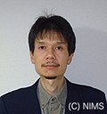
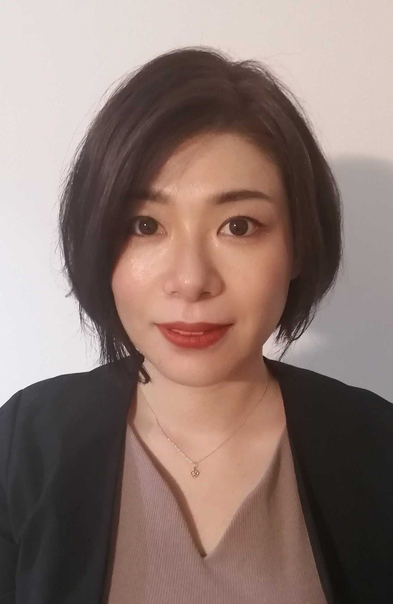

Members
私たちのチームを紹介します。多様なバックグラウンドを持つメンバーが、それぞれの強みを活かして活躍しています。


柿沼 洋 Hiroshi Kakinuma
Invited Researcher

齋藤 圭 Kei Saito
Postdoctoral Researcher

ヤン ジイ Yang Jiyi
Junior Researcher


松本 裕治 Yuji Matsumoto
Visiting Researcher
LIU Shanshan
Visiting Researcher
PHI Thuy Van
Visiting Researcher

戸田 佳明 Yoshiaki Toda
Principal Researcher
SAMURAI超臨界地熱発電用耐熱材料の評価と開発
再生可能エネルギー、地熱発電、ケーシング材、耐熱鋼、腐食、酸化、高温高圧、超臨界水、水蒸気、酸性

小畠 仁奈 Nina Kobata
Research Staff


タン ティアンウェン Tianwen Tang
Junior Researcher
山本 由希 Yuki Yamamoto
Research Staff
谷口 祥子 Sachiko Taniguchi
Research Staff
劉 大元 Dayuan Liu
Trainee（筑波大学大学院）
柳川 真之裕 Masanohiro Yanagawa
Trainee（筑波大学大学院）
陳 旭斐 Xufei Chen
Trainee（筑波大学大学院）
江 梓言 Ziyan Jiang
Trainee（筑波大学大学院）
Cecilia Nemessanyi
Trainee（Budapest University of Technology and Economics）

伊藤 海太 Kaita Ito
Senior Researcher
SAMURAIAE法による材料製造加工のインプロセスモニタリング
アコースティック・エミッション法、Acoustic Emission、非破壊評価、非破壊検査、インプロセスモニタリング、IoT

桂 ゆかり Yukari Katsura
Senior Researcher
SAMURAI Personal Page大規模データベースStarrydataで材料科学の世界を俯瞰
マテリアルDX、データベース、マテリアルズ・インフォマティクス、新物質探索、無機結晶構造、熱電材料、磁石、準結晶、超伝導、電池材料

間藤 智也 Tomoya Mato
Engineer

田中 敦美 Atsumi Tanaka
Research Staff

DEWI YANA Dewi Yana
Research Staff

藤田 絵梨奈 Erina Fujita
Visiting Researcher
Former Trainee
- Jiri Ryjacek（Czech Technical University）2025年6月-2025年7月
- Kaushik Raj Pyla（UNSW Canberra）2025年5月-2025年8月